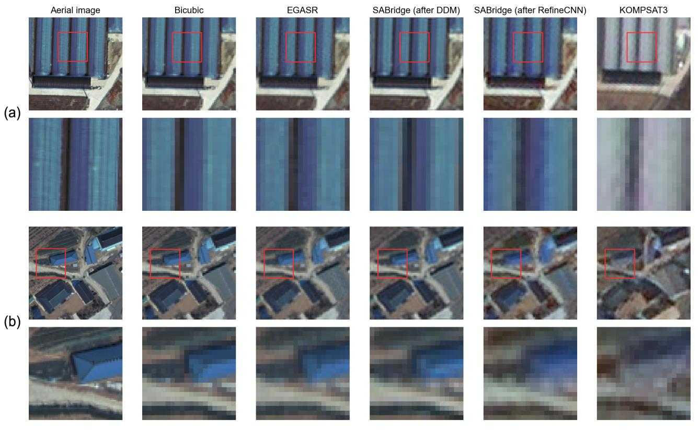
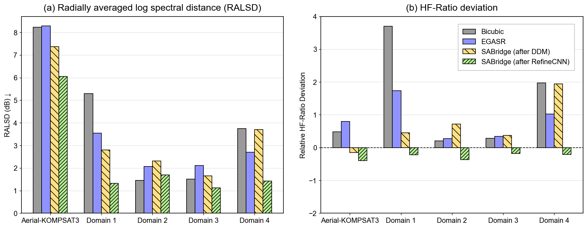
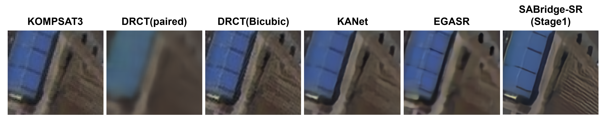

Reframing the aerial–satellite domain gap
Identifies why conventional synthetic downsampling and cross-sensor satellite SR assumptions can fail when the high-resolution reference comes from a distinct imaging platform.
Cross-platform transferThis research addresses the cross-platform domain gap between high-resolution aerial imagery and KOMPSAT-3 satellite observations by learning a realistic degradation process for ×3 satellite image super-resolution.
High-resolution aerial images provide spatial detail that is difficult to obtain from KOMPSAT-3 alone, but they are not direct pixel-level ground truth for satellite observations. Differences in sensor response, acquisition time, viewing geometry, illumination, and spatial alignment make a simple aerial-to-satellite training transfer unreliable.
How can aerial imagery contribute to ×3 KOMPSAT-3 super-resolution without assuming that independently acquired aerial and satellite images are perfectly interchangeable?
Realistic sensor degradation and imperfect cross-platform correspondence must be addressed separately.
SABridge investigates a degradation-aware approach to leveraging high-resolution aerial imagery for real KOMPSAT-3 super-resolution. Its contribution is not simply a stronger SR backbone, but the treatment of the cross-platform learning problem itself.
Identifies why conventional synthetic downsampling and cross-sensor satellite SR assumptions can fail when the high-resolution reference comes from a distinct imaging platform.
Cross-platform transferInvestigates how to create satellite-like low-resolution observations from aerial imagery while better representing target-sensor image characteristics than fixed downsampling assumptions.
Realistic degradationSeparates reliable synthetic correspondence from imperfect real-world alignment and evaluates degradation realism independently of the learning process, alongside preliminary real-image SR comparisons.
Reliable evaluationThe research combines target-aware degradation modeling with super-resolution learning and validation on real KOMPSAT-3 observations. Detailed architectures, parameterizations, optimization objectives, and training protocols are available to collaborators upon request.
Characterize how real satellite observations differ from high-resolution aerial images.
Study realistic aerial-to-satellite degradation rather than relying only on idealized bicubic reduction.
Evaluate degradation characteristics and preliminary reconstruction quality on KOMPSAT-3 imagery.
Evaluation is separated from the learned degradation process. A controlled benchmark uses physically motivated degradation mechanisms with exact LR–HR correspondence, while real-world validation assesses practical behavior on KOMPSAT-3 imagery.
The currently completed experiments evaluate whether SABridge-Deg reproduces target-like spectral characteristics across real aerial–KOMPSAT-3 observations and independent simulation domains.
The complete SABridge-Deg was observed to reduce radially averaged log spectral distance (RALSD) in the reported experiments relative to Bicubic, EGASR, and the intermediate DDM output. RefineCNN further reduces the residual discrepancy after explicit differentiable degradation.
Final SABridge-Deg after RefineCNN; lower indicates closer radial spectral agreement.


Super-resolution evaluation is still in progress. The example below provides an early qualitative view of how different degradation assumptions affect reconstruction under the aerial-to-satellite domain gap.

DRCT (Bicubic) is trained without an explicit model of real satellite degradation. Consequently, degradations present in KOMPSAT-3 observations are not sufficiently compensated for, limiting the recovery of fine spatial structures.
KANet and EGASR are designed around cross-sensor satellite super-resolution. Their degradation assumptions do not fully represent the larger cross-platform discrepancy between aerial and satellite imagery, where differences in spatial response, resolution, acquisition geometry, and image formation are more pronounced.
SABridge-SR appears to recover sharper structures in the preliminary visual comparison; quantitative pixel-level fidelity remains under evaluation, suggesting the potential to recover more high-frequency structure.
This work is currently in preparation. Enter the access password to view the protected methodology, experiments, figures, and results.